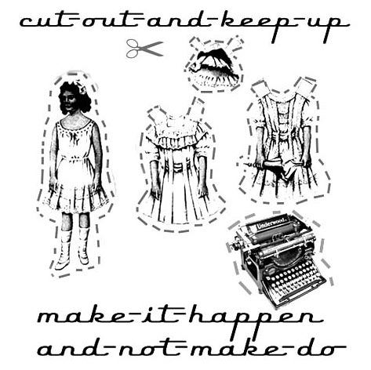
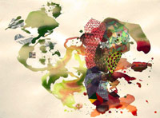
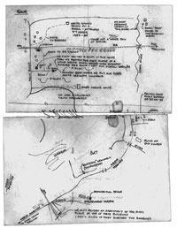
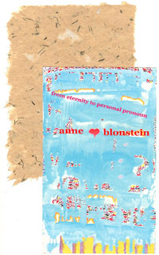
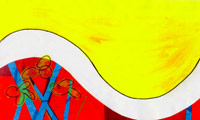
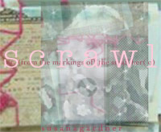

Cut Out and Keep Up:
The Make It Happen and Not Make Do Issue
Vol. 3 Issue 1 |
Summer 2007 |

Special Feature: Cambridge Experimental Women's Poetry Festival 5 - 9 October 2006 coordinated by Emily Critchley and Kai Fierle Hedrick  with introduction and an overview by Emily Critchley Featuring a selection of poetry by Africa Wayne Selected papers by Lucy Sheerman Letters to Poets: Conversations about Poetics, Politics and Community edited by Jennifer Firestone and Dana Teen Lomax  Introduction by Jennifer Firestone and Dana Teen Lomax Featuring letters between: Jill Magi and Cecilia Vicuña and featuring work by all six poets alerts Short commentaries on recent and notable publications  Marina Camboni on Anne Blonstein's from eternity to personal pronoun Jennifer Dick on Laura Mullen's Murmur Anne Heide on Anna Rabinowitz's The Wanton Sublime: A Florilegium of Whethers and Wonder Lori Lubeski on Nuala M. Archer’s Inch Aeons Craig Perez on Sawako Nakayasu's Insect Country (A) |
by Jena Osman new media Pantoume and Archive of the Now curated by Sophie Robinson and Rosheen Brennan
From Pantoume by Kai Fierle Hedrick and Marianne Morris Feature on Pantoume, by Kai Fierle Hedrick and Marianne Morris, featuring: Interview with Kai Fierle Hedrick and Marianne Morris by Sophie Robinson Sophie Robinson's Sugar, a poem in response to Pantoume Feature on Archive of the Now, created by Andrea Brady, featuring: Rosheen Brennan in conversation with Andrea Brady Andrea Brady's reading of her digital poem 'Wildfire' translation . o O Elke de Rijcke: gouttes ! pieds presque proliférants sous soleil de poche translated by Joe Ross, in collaboration with Elke de Rijcke )postcard coordinated by Lauren Shufran
A gathering of brief memoirs and BG poems (selected by her readers) to honor the life and writing of Barbara Guest 1920-2006 in' print up date
|
= new writing = compiled and edited by Frances Kruk  Featuring: Maggie O'Sullivan | Susan M. Schultz | Sophie Robinson | Frances Presley | Kaia Sand | MG Roberts | MG Roberts & Laine Ballard | Redell Olsen | Susana Gardner | Cynthia Hogue | Jennifer Firestone | Kate Fagan | Leslie Scalapino & Lyn Hejinian curated by Frances Kruk  Frances Kruk A selection of work from writers at Dusie Books: Kaia Sand Southampton University, 28th-29th September 2006 Introduction by Victoria Sheppard and Mandy Bloomfield Featuring readings by: Caroline Bergvall + editor's notes + Cut Out and Keep Up: This issue is about past and present collaborative ventures and about offering invitations for future possibilities. I would like to begin by thanking and congratulating Kate Fagan on the wonderful job she has done of editing How2 ... [continued] How(ever) Archive [1983-1992], and How2, Vol. 1 No. 1-8 and Vol. 2 No. 1-4 Links Search HOW2
|


HOW(ever) and HOW2 are presented on this web site with the permission of Kathleen Fraser, the publisher. These works are made available only for the purpose of private study, scholarship, or research. Subject to the foregoing limited permission, all written works appearing in these pages are the property of their authors and are covered by U.S. copyright law. For information about these works and any rights and permissions associated with them, please contact Kathleen Fraser